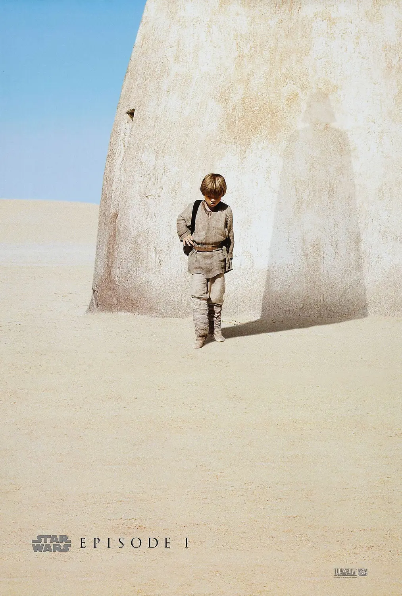

Episódio I: A Ameaça Fantasma
Ano de Lançamento: 1999
Dois Cavaleiros Jedi descobrem Anakin Skywalker, um jovem escravo que pode trazer equilíbrio à Força. Enquanto isso, a sombria ameaça dos Sith ressurge para desafiar a República.
Orçamento: $115 milhões
Bilheteria: $1.027 bilhão